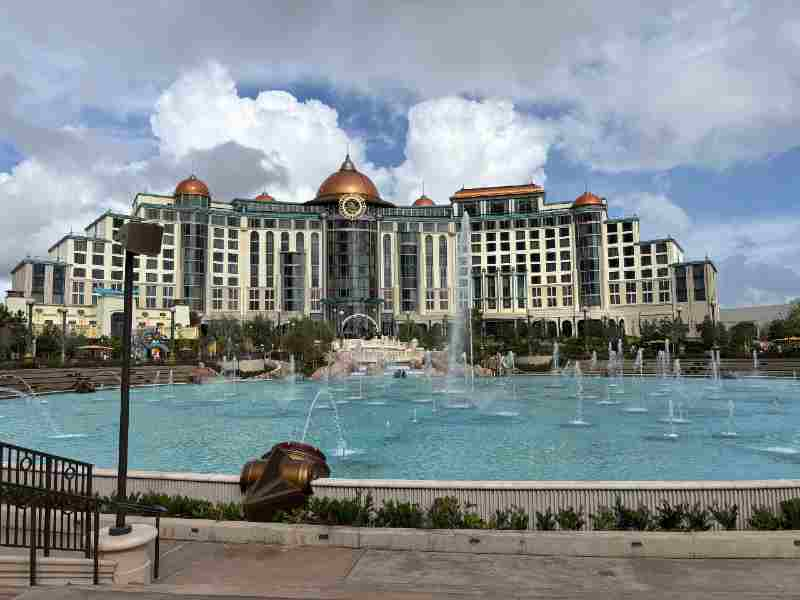

Orlando, Florida — My Personal Favorite

One of the places I have always found joy is visiting Orlando with my family since I was young. I was able to visit the new Universal Studios park Epic Universe last year and my visit went perfectly. I was able to explore the new Harry Potter world, Super Mario Bros, Dark Universe and How to Train Your Dragon.
Orlando has always the home to more than a dozen theme parks such as Walt Disney World (Magic Kingdom and Epcot), and water parks.
Orlando locals are known to include a vibrant mix of creative professionals, long-term residents and hospitality experts who take pride in the city's growth beyond theme parks. Locals will be found at Lake Eola's Sunday market exploring the food scene in the Milk District.